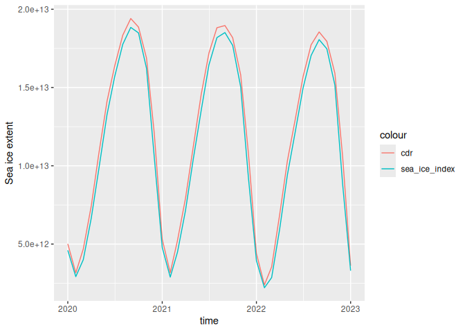

The goal of icecdr is to download sea ice concentration data from the NSIDC Climate Data Record.
Example
Use the cdr_* functions to download satellite-derived Antarctic or Arctic sea ice concentration data at monthly or daily resolution. They use version 5 by default but version 4 is also supported.
The basic usage downloads a NetCDF file in a temporary directory.
library(icecdr)
dates <- c("2020-01-01", "2023-01-01")
cdr_antarctic_monthly(dates, dir = "data")
#> Returning existing file.
#> [1] "data/995732f34533e77ab2bf32f847c84deb.nc"By default, files are only downloaded if needed.
system.time(cdr_antarctic_monthly(dates, dir = "data"))
#> Returning existing file.
#> user system elapsed
#> 0.031 0.000 0.031There are four simple functions to download whole-domain data:
But the cdr() function exposes all arguments to download any crazy subset
cdr(date_range = dates,
# Data every 7 days
date_stride = 7,
resolution = "daily",
# Thin the grid by taking every other gridpoint
xgrid_stride = 2,
ygrid_stride = 2,
hemisphere = "north"
)The cdr_fix() function will fix the grid information to make it work with CDO and standardise variable names. This requires CDO installed in your system.
library(rcdo)
library(ggplot2)
extent_cdr <- cdr_antarctic_monthly(dates, dir = "data") |>
cdr_fix() |>
cdo_gtc(0.15) |>
cdo_fldint() |>
cdo_execute() |>
metR::ReadNetCDF(c(extent = "aice"))
#> Warning: Using CDO version 2.4.0 which is different from the version supported by this
#> version of rcdo (2.5.1).
#> ℹ This warning is displayed once per session.
#> Returning existing file.
#> No standard variable name found, returning unchanged file
extent_index <- sea_ice_index("south", "monthly", dir = "data") |>
data.table::fread() |>
subset(time >= dates[1] & time <= dates[2])
#> Returning existing file.
extent_cdr |>
ggplot(aes(time, extent)) +
geom_line(aes(colour = "cdr")) +
geom_line(data = extent_index, aes(colour = "sea_ice_index")) +
labs(y = "Sea ice extent")